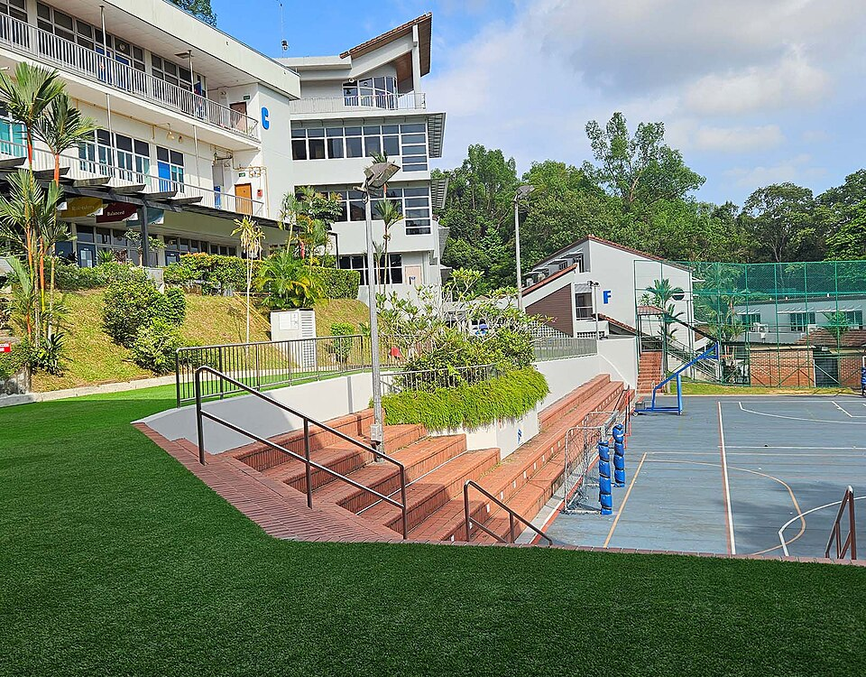

챗스워스 인터내셔널 스쿨 부킷티마 캠퍼스 · 사진: Chatsworthsg / Wikimedia Commons, CC BY 4.0
챗스워스 인터내셔널 스쿨(Chatsworth International School, 싱가포르) — 옛 안내문의 캠퍼스는 지금 없습니다
1. 어떤 학교인가
· 설립 — 1995년에 세워진 것으로 알려져 있습니다. 소수의 학생과 교사로 시작해 어퍼세랑군(Upper Serangoon) 쪽에서 출발한 것으로 안내됩니다.
· 캠퍼스 이동 — 1998년 오차드 로드 인근의 캠퍼스로 옮겼고, 이 건물은 옛 싱가포르 중화여학교(Singapore Chinese Girls' School)가 쓰던 곳으로 알려져 있습니다. 이후 2018년 8월 부킷티마(Bukit Timah)에 캠퍼스를 열었고, 2020년에 오차드 쪽 초등 과정을 부킷티마로 모은 것으로 안내됩니다.
· 현재 — 부킷티마 한 곳에서 유치원 과정부터 Year 13까지를 운영하는 형태로 안내됩니다.
· 교육과정 — IB 월드스쿨로, IB PYP(초등)·MYP(중등)·DP(디플로마)를 운영하는 것으로 안내됩니다. 즉 아이가 입학해서 졸업할 때까지 한 가지 틀 안에서 이어집니다.
※ 학비·정원·합격률·재학생 수처럼 해마다 바뀌는 수치는 이 글에서 다루지 않습니다. 개설 과정과 학년 구성도 연도에 따라 안내가 달라질 수 있으니 올해 요강을 직접 확인하세요.
2. 핵심 — 검색으로 나오는 정보가 "몇 년도의 학교"인지 보세요
이 글에서 꼭 가져가셔야 할 한 가지입니다. 이 학교는 캠퍼스가 바뀐 학교입니다. 그래서 한국어로 된 소개글·후기·유학원 자료 중 상당수가 오차드 시절에 쓰인 글입니다. 문제는 그 글들이 대개 날짜를 크게 적지 않는다는 점입니다.
이것이 실제로 어떤 손해를 만드는지 보겠습니다.
| 학부모가 계획하는 것 | 옛 글을 보고 판단하면 | 지금 기준으로 해야 할 일 |
|---|---|---|
| 집 구하기 | 오차드 생활권에서 찾음 | 부킷티마 기준으로 통근·통학을 함께 계산 |
| 통학 시간 | 도심 기준으로 짧게 잡음 | 출근 시간대 실제 소요 시간을 다시 확인 |
| 학교 방문 | 옛 주소로 찾아감 | 학교 홈페이지의 현재 주소로 예약 |
| 학년 구성 | "초등은 저쪽 캠퍼스"로 기억 | 지금은 한 캠퍼스에서 이어진다고 보고 확인 |
| 통학 버스 | 옛 노선표를 참고 | 거주 예정지를 대고 노선 유무를 직접 문의 |
정리하면 확인 방법은 간단합니다. 검색해서 나온 글의 작성 연도를 먼저 보세요. 2020년 이전 글이면 주소와 통학에 관한 내용은 버리고 학교 분위기·수업 이야기만 참고하시면 됩니다. 이 원칙은 이 학교만의 이야기가 아닙니다. 국제학교는 캠퍼스를 옮기거나 이름을 바꾸는 일이 드물지 않아서, 상하이의 BISS·NAIS 상하이처럼 이름이 바뀐 사례도 있습니다.
3. 싱가포르에서 "작은 학교"를 고른다는 것
싱가포르에는 학생 수가 수천 명에 이르는 대규모 국제학교들이 있습니다. 싱가포르 아메리칸 스쿨이나 UWCSEA가 대표적입니다. 그 옆에서 이 학교는 상대적으로 작은 학교로 자리를 잡아 왔습니다. 규모가 다르다는 건 좋고 나쁨이 아니라 성격이 다르다는 뜻입니다.
· 작은 학교의 강점 — 교사가 아이 이름과 상태를 빨리 압니다. 학년 사이의 거리도 가까워, 중간에 편입해 온 아이가 자리를 잡기까지 걸리는 시간이 짧은 편입니다. 상담에서 여러 교사의 이야기를 모으기도 수월합니다.
· 작은 학교에서 확인할 것 — 고학년 선택 과목의 가짓수입니다. 아이가 관심 있는 과목이 매년 열리는지, 신청자가 적으면 폐강되는지를 물어보셔야 합니다. 스포츠 팀과 동아리의 폭도 대규모 학교보다 좁을 수 있습니다. → 방과후·클럽 활동(ECA·CCA)
판단 기준을 한 줄로 좁히면 이렇습니다. "우리 아이가 고등학교에서 하고 싶어 할 것이 이 학교 안에 있는가." 저학년 학부모님은 이 질문을 너무 이르다고 느끼시지만, 중간에 학교를 바꾸는 비용을 생각하면 지금 물어보는 편이 쌉니다.
4. 한국(주재원) 학생·학부모가 겪는 어려움
· IB는 초등부터 성격이 다르다. PYP 구간은 단원 이름은 보이는데 진도가 안 보입니다. 한국식 교과서 진도를 기대하시면 "무엇을 배우는지 모르겠다"는 답답함이 생깁니다. → IB 전 과정 구조
· 중등에서 채점 기준표가 등장한다. MYP는 기준표(criteria)에 맞춰 채점합니다. 답이 맞았는지보다 어떻게 설명했는지가 점수를 가르기 때문에, 한국에서 잘하던 아이가 갑자기 흔들립니다. → 형성평가·총괄평가 구분
· 고등은 기한이 몰린다. 디플로마 구간은 장기 과제가 여러 과목에 동시에 걸립니다. 난이도가 아니라 일정 관리가 점수를 가릅니다. → IB DP 점수 완전정복
· 생활 영어는 느는데 교과 영어가 안 는다. 회화가 빨리 늘어 안심하시는데, 점수는 교과를 읽고 설명하는 영어에서 갈립니다. → EAL(영어 지원 프로그램) · Learning Support
· 수학은 용어와 서술에서 막힌다. 한국에서 이미 배운 내용인데 알지브라·지오메트리 용어가 영어라 못 푸는 경우가 흔합니다. 답만 적으면 과정 점수를 받지 못합니다.
· 성적이 어떻게 가는지 안 보인다. 학교 플랫폼에는 무엇을 냈는가는 보이는데 왜 그 점수인가는 안 보입니다. → 학습 플랫폼·시간표 읽는 법 · 성적표 읽는 법
5. 그래서 이렇게 준비합니다
🧭 먼저 — 아이가 "어느 구간"에 있는지 적는다
IB 전 과정 학교에서는 구간마다 점수를 가르는 것이 다릅니다. 종이에 한 줄만 적어 보세요. "우리 아이는 지금 PYP / MYP / DP 중 어디인가." 이 한 줄이 정해지면 무엇부터 손볼지가 바로 정해집니다.
· PYP 구간 — 읽기 수준과 영어로 쓰인 수학 용어. 여기서 벌어 두면 뒤가 편합니다.
· MYP 구간 — 기준표에 맞춰 답의 형태를 바꾸는 연습, 그리고 과정을 적는 수학.
· DP 구간 — 장기 과제의 기한 관리와 글의 구조. 점수가 몰려 있어 한 번 놓치면 회복이 어렵습니다.
📖 영어과외 — 에세이는 "구조"부터
IB에서 영어는 글의 구조가 점수를 정합니다. 주장·근거·해석이 한 문단 안에서 어떤 순서로 놓이는지를 익히는 훈련을 먼저 합니다. 내용이 있어도 구조가 없으면 기준표의 상위 칸에 닿지 못합니다. (영어 공부법 참고)
📐 수학과외 — 용어를 붙이고, 과정을 문장으로
아이가 이미 아는 개념에 영어 용어를 다시 붙여 주는 작업부터 합니다. 그다음 풀이 과정을 영어 문장으로 적는 습관을 들입니다. IB 수학은 AA와 AI로 갈리므로 고등 진입 전에 어느 쪽이 맞는지도 함께 봅니다. (알지브라 공부법 · IB 수학 AA·AI 참고)
📅 학교를 방문하신다면
작은 학교일수록 가서 물어봐야만 알 수 있는 것이 많습니다. 고학년 선택 과목의 개설 여부, 한 학년의 반 수, 편입생이 들어왔을 때의 지원 방식 같은 것들입니다. 무엇을 묻고 무엇을 볼지는 오픈데이·학교 방문 준비법에 정리해 두었습니다. → 편입·전학 총정리
6. 싱가포르의 강점 — 시차 한 시간의 화상과외
싱가포르는 한국보다 한 시간 느립니다. 싱가포르 오후 4시가 한국 오후 5시라, 아이의 방과 후 시간이 한국 강사진의 수업 시간과 거의 그대로 맞습니다. 부킷티마처럼 도심에서 조금 떨어진 생활권이면 이 장점이 더 큽니다. 수업을 위해 다시 나갈 필요가 없기 때문입니다. 아이의 실제 과제와 학교가 준 채점 기준을 화면에 놓고 "어느 항목에서 깎였는지"부터 확인하는 방식이 가장 빠릅니다. 싱가포르 전반의 사정은 싱가포르 국제학교 과외와 싱가포르 학원 vs 1:1 과외에 정리해 두었습니다.
정리
챗스워스 인터내셔널 스쿨은 1995년 개교로 알려진 싱가포르의 IB 월드스쿨이고, 지금은 부킷티마 한 곳에서 유치원 과정부터 Year 13까지를 운영하는 형태로 안내됩니다. 이 학교를 보실 때 질문은 셋입니다. "내가 읽고 있는 자료가 몇 년도 것인가." "부킷티마 기준으로 통학이 가능한가." 그리고 "아이가 고등학교에서 하고 싶어 할 과목과 활동이 이 학교 안에 있는가." 세 번째 질문의 답은 학교에 직접 물어야만 나옵니다. 30분 무료 상담으로 우리 아이가 지금 어느 구간에 있는지부터 함께 짚어 보세요.